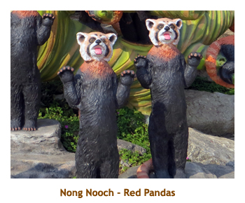

[ Home ] [ Travel ] [ Photography ] [ Pets ] [ Games] [ Rowing] [ Physics ]


Cruising on the Sapphire Princess
Travel
Cruises
Past Cruises (Diaries)
Future Cruises
Rogues Galleries
Land Trips
Diaries (Land Trips)
Hawai'i - Big Island - 04'01
Hawai'i - Maui - 05'02
Hawai'i - Big Island - 04'03
Hawai'i - Kaua'i - 09'04
Hawai'i - Big Island - 04'06
Hawai'i - Maui - 04'06
Mainland China - 05'07
Phoenix, Arizona - 12'07
Greek Isles - 05'08
Hawai'i - Kaua'i - 09'08
Hawai'i - Big Island - 09'09
Hawai'i - Maui - 05'12
Hawai'i - Big Island - 04'13
Ireland - 08'13
Mexico - Cancun 11'13
France/Belgium/Lux 07'15
Hawai'i - Big Island - 05'17
England / Wales - 06'17
Hawai'i - Big Island - 09'19
Photography
Cameras
Underwater
Pets
Tara
Blackie
Whitey
Muffy
Ollie
Rusty
Fluffy
Rufus&Dufus
Games
Rowing
Physics
Rating (out of 5):
Ship  Food
Service
Itinerary
Food
Service
Itinerary
Day 1 (Feb 28) - (Re)Boarding in Singapore
Days 2, 3 (Mar 1, 2) - A day at sea then Brunei
Mar 2: We were up at 6:30. We had breakfast in the buffet even
though we weren't docking at Brunei (port town of Muara) until 10:00 AM. Our
tour was at 10:15. After boarding the bus we drove from Muara to Bandar
Seri Begawan, the capital of Brunei. Brunei is a tiny country, and everything
is really about the Sultan (Haji Hassanal Bolkiah).
Our first drive by photo op was the Royal Palace, the largest residential palace at 2.2 million (!!) square feet of floor space. It was mostly hidden in the trees. Then we drove by a subdivision with homes for the relatives of the royal family. Pretty nice! A short distance away were the polo grounds and stables for a hundred or so ponies. Then we visited a huge mosque (the Jame'Asr Hassanal Bolkiah mosque) followed by another mosque (the Omar Ali Saifuddien mosque) and the famous diamond arch. Our final stop was at the Royal Regalia Museum which housed civil and military uniforms, carriages, royal dress and various gifts from many foreign countries. It was a really interesting museum. Nearby we stopped to see a floating village (Kampong Ayer). Some of the tours included walking through the village, but we just had time for a photo op from across the bay. We were back to the ship about 4:00 PM. For dinner I had lamb shank. Because of the late sailing time (8:00 PM) our regular 4 dinner mates were off on shore. We would have been all alone, but, lo and behold, 2 more tablemates showed up - a mother and daughter. They loved the specialty restaurants so we only saw them twice. We read, walked the decks and then headed to bed.
Days 4, 5 (Mar 3, 4) - A day at sea and Nha Trang, Vietnam
Mar 4: We were up at 6:30. We had breakfast in the buffet as
we anchored in Nha Trang Bay. It was another hot day - 25 degrees and humid.
We had a tour at 8:00. As we left the ship we were given a Vietnamese landing card.
We tendered ashore and climbed on the bus where we had a short drive from the
dock to the town. Our first stop was at a shrine overlooking the bay. Inside the
small building were several native musical instruments which a man and lady
played for us. It was very nice. Then we had some time to walk around the gardens
and visit the rocky beach.
 |
Our next stop was a short distance away at the Cham Towers, the best preserved relic of the Champa dynasty. These are religious temples built between the 7th and 12th centuries. We were given about half an hour to wander around the site. Our next stop was at the Tran Phu bridge crossing the harbour inlet. We were let out of the bus with the understanding that we were walking partway out onto the bridge for a photo op of some fishing boats, so one older passenger decided to wait at the start of the bridge while we walked there and back. Well, it turned out that we walked all the way across the bridge (about one kilometer) and there was the bus waiting for us. So we were one short! Right at that instant, some police motorcyclists shut down the bridge for a bicycle race (tour de somewhere) to pass, so we couldn't drive back to get the guy. We had to drive further to another bridge and finally arrived back at the start of the bridge. By this time the fellow had figured it out and walked across the bridge, so we had to wait for the bikes to pass and then drive over the bridge again. We rescued the lost guy and continued to our next stop at the Long Son pagoda. This was a Buddhist temple complete with lots of gold and a huge white Buddha in the distance.
 |
Our next stop was a snack break, served in a huge open air restaurant. There were some musicians playing on stage, and the restaurant was surrounded with souvenier kisoks. After a half hour break we reboarded the bus and drove to the Cho Dam Market. We were given about half an hour to stroll through the market stalls. Our final stop was at an embroidery factory and showroom. These are the beautiful embroidered pictures on a translucent screen so that the picture can be seen from either side. Amazing! One large picture was done on almost completely transparent silk and portrayed several beautifully coloured butterfiles. I really enjoyed seeing through the display. After all that, we were still back to the ship at 1:30. We did Alfredo's Pizzaria for lunch. We read for a while and then attended 3:30 trivia. One point shy again. For dinner I had diver scallops. Yummy! We walked the upper deck in the dark for a while and then retired to bed. It had been a busy, but wonderful day.
Day 6 (Mar 5) - Ho Chi Minh City (Saigon)
 |
Leaving the factory, we drove through the city to the famous old post office. What a brilliant colour! Inside it was more like a small train station than a post office. Across the street was a Catholic church (Notre Dame), an unusual sight in this land of Buddhist temples. Speaking of temples, our next stop was at the Jade Emperor Pagoda. At this point it was lunch time so we drove to a large hotel for a buffet lunch. Once again we had live entertainment, but the music was unbearably loud. The dancers were good though. The buffet was good, too. After lunch we drove to the Reunification Palace. This was the headquarters of the South Vietnamese government during the war. From there we walked a few blocks to see some other famous buildings - the City Hall, the Rex Hotel and the Opera House. Then it was time to hop in our bus and drive back to Phu My and the ship. We were back to the ship by about 5:00 PM, wherein we surrendered our Vietnamese landing cards. For dinner I had a "trilogy" - pork, chicken and lamb. I usually really enjoy the food, but the pork was just a lump of fat, the chicken was really dry and the lamb chop was grisly and tough. Crappy! We did our usual read and wander, then to bed.
Days 7, 8 (Mar 6, 7) - A day at sea and Pattaya, Thailand
Mar 7:Today we were docking in Port Laem Chabang, the entry point
to Bangkok. It was a two hour drive to Bangkok and we had had enough of
long tours, so we booked a local tour to a famous garden just out of Pattaya,
about a 45 minute drive. We were up at 6:30 and had breakfast in the buffet.
Leaving the ship we were given Malaysian landing cards.
We met the bus at 7:45 and headed off to Pattaya City and the
Nong Nooch Gardens.
The gardens turned out to be wonderful. The only negative was that we didn't
have nearly enough time to do the 600 acre park justice. By comparison,
Butchart Gardens in Victoria is 55 acres. We were given one
hour to walk around the grounds on our own. We managed to hustle around
a small portion of the garden before the hour was up. The gardens consisted of
groupings of flowers and shrubs into lovely gardens, and hundreds of fake
animals. On the one hand this could be considered tacky, but it was actually very
well done. We took many photos of the animals, which I have published on a
separate animal page.
|  |
After the hour had elapsed we met at a huge indoor stadium where they put on a song and dance "cultural" show. It was very good and even included a couple of elephants! It was very hot and humid inside the venue, and they had huge fans and misters blowing damp air. It just made it even more humid! Phew!! After the cultural show we all marched to the next building for an elephant show. It was excellent with elephants dancing, throwing darts at ballons, shooting baskets and playing soccer. After the show we all piled onto the bus and were driven to another part of the park that featured an orchid garden and a flowerport sculture display. There were literally thousands of flower pots. Some were huge pots either by themselves or with flowers in them. Others were sculptures of arches, elephants, etc made from stacking small flower pots. Then it was back on the bus for the trip back to the ship. Along the way we stopped at a jewelry / souvenir shop, which advertised itself as the largest jewelry store in the world. It was huge. We arrived back in Port Laem Chabang about 1:30. We did Alfredo's Pizzaria for lunch. We read for a bit and then played 4:00 trivia (we won). Marjorie went to a Smart Phone lecture, while I just read. For dinner I had Chinese noodle soup. What brought that on? Then it was time to read, wander the upper deck and then to bed.
Day 9 (Mar 8) - Ko Samui, Thailand
Driving along the north end of the island we passed over a small bridge to Fan Island and stopped at the Wat Phrayai (Big Buddha) temple. This temple was built in 1972. We were given some time to walk around the area and then we continued our bus tour. Our next stop was a small village with several brightly coloured temples. We toured through two of them and learned a bit about the Buddhist philosophy. There was a huge statue of a smiling Buddha and one of Guanjin, the 18-armed Buddhist avatar of Mercy. After the guided tour we were given some time to walk around the temples and the village. There seemed to be Buddhas everywhere. Continuing on, our next stop was a buffet lunch at a resort hotel (The Imperial Boat House Beach Resort). It was very good. After lunch we wandered around the grounds of the hotel until it was time to board the bus.
 |
Our final stop was at Chaweng Beach.It was really hot and humid and the beach was unshaded, so we opted to walk a few blocks to an air conditioned mall. We found a grocery store there and bought some choco milk and a couple beer to take onboard. Walking back to the assembly point, I got ahead of Marjorie, so looked alone. I passed a group of young women sitting outside a store. One of them leaped up and grabbed my arm. With my thick black hair, chisled looks and super-toned body, I'm used to that reaction from women. Then I saw the store sign - "Exotic Massage" and realized they were just doing their job. Very deflating! We were back to the bus early so walked down the dirt access road to check out the beach. It really was a beautiful large sandy beach. We were finally back to the tender dock by 3:00. We had quite a wait to get onto a tender, and arrived back at the ship about 4:00 - a long day! We showered and changed and managed to make 4:15 trivia.. Afterwards we relaxed and read on the balcony. For dinner I had lobster and shrimp. Yummy. Read, wandered and to bed. Clocks forward 1 hour tonight.
Day 10 (Mar 9) - A final day at sea
Days 11 (Mar 10) - Disembarking in Singapore
 |
|||
 The zoo was quite large, so we started off by by taking the passenger tram right
around the grounds to orient ourselves. Then we hit the restaurant to have a combo
lunch / dinner. Just as we were going in to the restaurant, there were a few spits of
rain. However, by the time we finished lunch, the rain had stopped and everything
looked dry again. Fortified, we walked around the entire park checking out the exhibits.
The amazing thing was that there were no fences. Instead, the animals were isolated from
the spectators by waterways, or almost invisible ditches. It made you feel part of the
exhibit. There were also several screened in buildings where you could walk right
through birds and smaller animals. Overall it was an excellent zoo. The only
disappointment was that the Australia section was under reconstruction. By about 5:00 we
had seen most of the zoo and were ready to call it quits. We did the bus and three
trains thingy (taking 1:45) and arrived back at our hotel about 7:00. We wandered
through the airport food court for a snack (shared a bento box) and then returned
to the hotel for a read and to bed.
The zoo was quite large, so we started off by by taking the passenger tram right
around the grounds to orient ourselves. Then we hit the restaurant to have a combo
lunch / dinner. Just as we were going in to the restaurant, there were a few spits of
rain. However, by the time we finished lunch, the rain had stopped and everything
looked dry again. Fortified, we walked around the entire park checking out the exhibits.
The amazing thing was that there were no fences. Instead, the animals were isolated from
the spectators by waterways, or almost invisible ditches. It made you feel part of the
exhibit. There were also several screened in buildings where you could walk right
through birds and smaller animals. Overall it was an excellent zoo. The only
disappointment was that the Australia section was under reconstruction. By about 5:00 we
had seen most of the zoo and were ready to call it quits. We did the bus and three
trains thingy (taking 1:45) and arrived back at our hotel about 7:00. We wandered
through the airport food court for a snack (shared a bento box) and then returned
to the hotel for a read and to bed.
Day 12 (Mar 11) - Leaving Singapore for home
 We requested a wakeup call for 4:30. We woke up just after 4:00, so didn't really need
the call. We snacked on some muffins and juice. Then we headed down to the lobby to
check out. Our flight was leaving from Terminal 2, and that's exactly where our hotel was.
We did our baggage checkin, then went through customs and security. Our flight to
Narita (Tokyo) was ontime at 7:00 AM and we had a 6.5 hour flight to Tokyo. We had
about an hour to kill at Narita so had an ice cream cone. The flight staff took our carry on bags
and checked them into regular baggage. Haven't had that before! We left Tokyo at
16:10 for our 9 hour flight to Calgary. We landed ontime, got our bags OK, cleared
customs and exited into the meeting area by about 11:00. Ian and Shirley (bless them!)
were there to pick us up and take us home. Everything was fine at home and the kitties
were glad to see us. Another great cruise!!
We requested a wakeup call for 4:30. We woke up just after 4:00, so didn't really need
the call. We snacked on some muffins and juice. Then we headed down to the lobby to
check out. Our flight was leaving from Terminal 2, and that's exactly where our hotel was.
We did our baggage checkin, then went through customs and security. Our flight to
Narita (Tokyo) was ontime at 7:00 AM and we had a 6.5 hour flight to Tokyo. We had
about an hour to kill at Narita so had an ice cream cone. The flight staff took our carry on bags
and checked them into regular baggage. Haven't had that before! We left Tokyo at
16:10 for our 9 hour flight to Calgary. We landed ontime, got our bags OK, cleared
customs and exited into the meeting area by about 11:00. Ian and Shirley (bless them!)
were there to pick us up and take us home. Everything was fine at home and the kitties
were glad to see us. Another great cruise!!
If you wish to see the other part of our trip, please visit the SE Asia Part I trip diary.